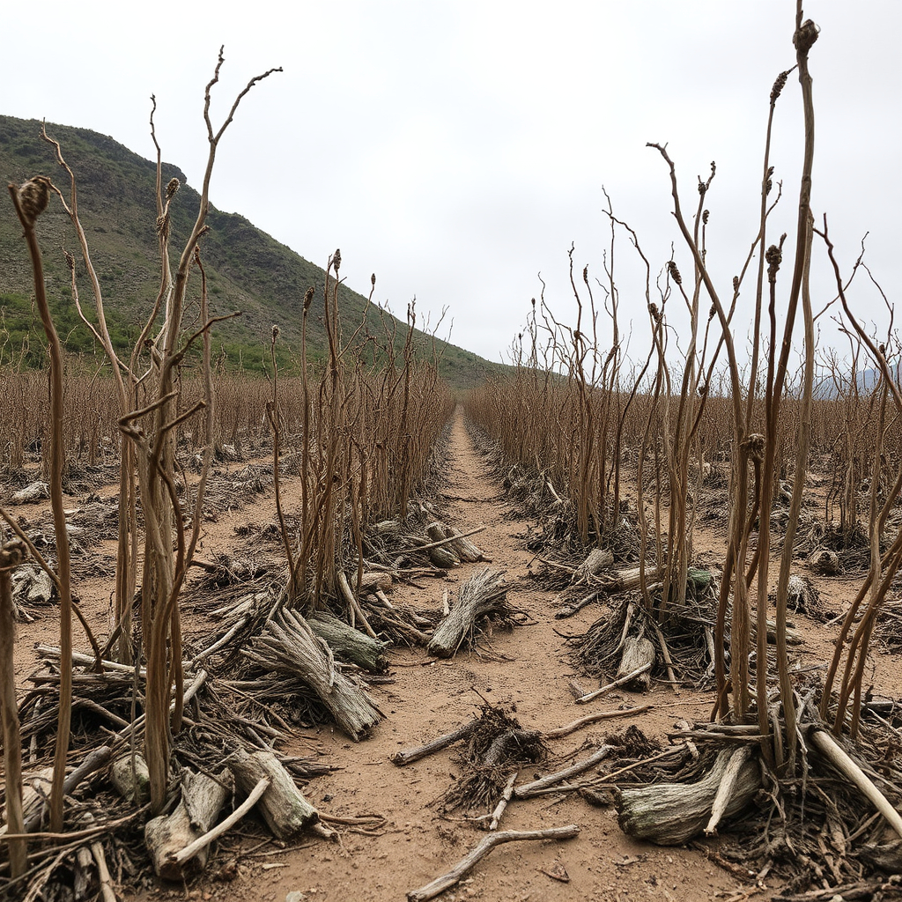
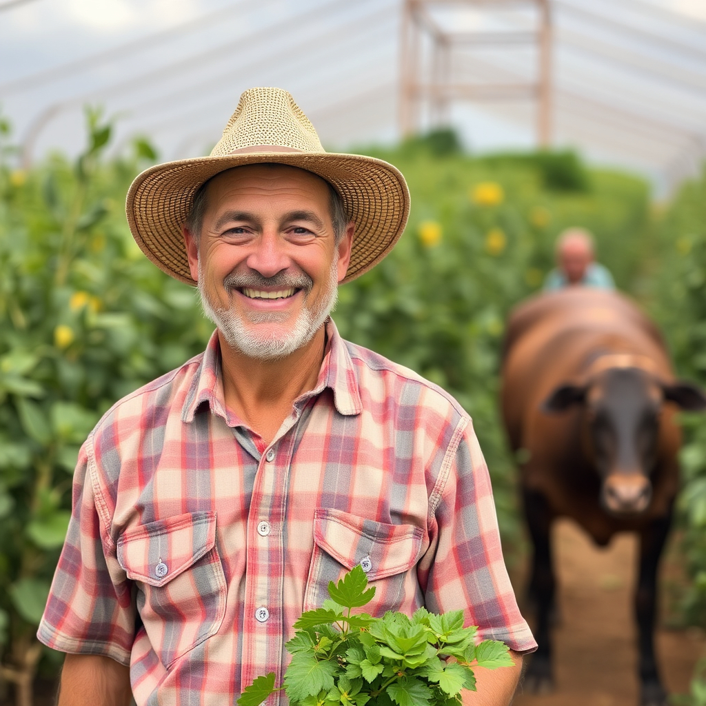

Soil Health and Its Impact
Soil health is the foundation of sustainable agriculture, and its quality directly influences global food security, economic stability, and environmental resilience. Healthy soils support nutrient-rich crops, mitigate the effects of climate change, and help protect ecosystems.
Factors Threatening Soil Quality

Soil quality might be degraded by several factors, such as:
- Soil degradation: Over-reliance on nitrogen fertilizers disrupts the balance of soil microbiota, which are essential for maintaining soil fertility.
- Water pollution: Only a fraction of the nitrogen fertilizers applied to fields is absorbed by plants.
- Greenhouse gas emissions: Nitrogen fertilizers contribute to the release of nitrous oxide (N₂O), a potent greenhouse gas that exacerbates global climate change.
- Soil acidification: Excess nitrogen application alters soil pH, leading to acidification.
Impact on Global Populations and Food Security
Several places are already suffering because of soil quality degradation. Some key impacts include:
- Lower crop yields: Degraded soils are less capable of retaining water and nutrients, leading to reduced crop productivity.
- Economic instability: Soil degradation not only affects farmers' livelihoods but also places a burden on entire economies.
- Rural poverty: Communities dependent on agriculture face heightened vulnerability when soil health declines.
- Human health risks: Poor soil health and water pollution, caused by excessive nitrogen use, contribute to various health problems.
Solutions to Address Soil Degradation
It is critical to adopt sustainable agricultural practices that protect and restore soils. Some of ways that achieve that are as follow:
- Sustainable farming practices: Reducing the reliance on synthetic fertilizers and adopting organic farming, crop rotation, and agroforestry can enhance soil health.
- Empowering small-scale farmers: SDG 2 calls for empowering small farmers through education and access to sustainable technologies.
- Earth observation (EO) technology: The integration of EO technology offers valuable insights into soil conditions.
- Reducing nitrogen use: Governments and agricultural industries need to work together to reduce the use of nitrogen fertilizers by promoting precision agriculture.
Reflective questions:
- 1. How do my food choices impact soil health?
- 2. How do current farming practices in my community affect soil quality?
- 3. How do my waste disposal habits affect soil health?
- 4. How can I support small-scale farmers in my area or abroad in maintaining soil health?
- 5. What actions can I take to promote soil conservation and sustainable agriculture in my daily life?
Personal and Community Challenges:
- 1. Start a composting project at home to reduce organic waste and create natural fertilizer. Reflect on how this improves soil quality in your garden or community.
- 2. For one month, commit to buying locally-grown, organic produce. Track how this choice impacts your awareness of sustainable farming practices and the local agricultural economy.
- 3. Participate in a community-supported agriculture (CSA) program or buy from local farmers markets. Learn about the farming practices of small-scale farmers and reflect on how they contribute to sustainable soil management.
- 4. Develop a personal or family plan to reduce food waste and support sustainable agriculture. This could include meal planning, composting, or reducing your consumption of processed and non-local foods.
- 5. If you garden, challenge yourself to avoid synthetic fertilizers for one growing season. Instead, use compost, manure, or other organic alternatives, and observe how it affects plant growth and soil quality.
Community and Global Engagement Challenges::
- 1. Start a garden project in your school or community that focuses on sustainable practices like composting, crop rotation, and organic fertilization. Engage others in learning about soil health through hands-on experience.
- 2. Research how Earth observation technologies can monitor soil health and promote sustainable agriculture. Advocate for the use of such technologies in your community or country to enhance agricultural productivity while preserving soil quality.
- 3. Work with local organizations to provide educational resources to small-scale farmers about sustainable farming techniques that improve soil health. Reflect on how empowering farmers with knowledge can make a significant difference in preserving soil ecosystems.
- 4. Organize a film screening or webinar that addresses the global importance of soil health in combating hunger and poverty. Afterward, lead a discussion on actionable steps to improve soil quality in your community.
- 5. Encourage farmers or gardeners in your community to reduce their reliance on nitrogen fertilizers. Provide information on precision agriculture and organic alternatives, and track the impact over a growing season.
Interactive Quiz
Test your knowledge about soil health and how to preserve it!